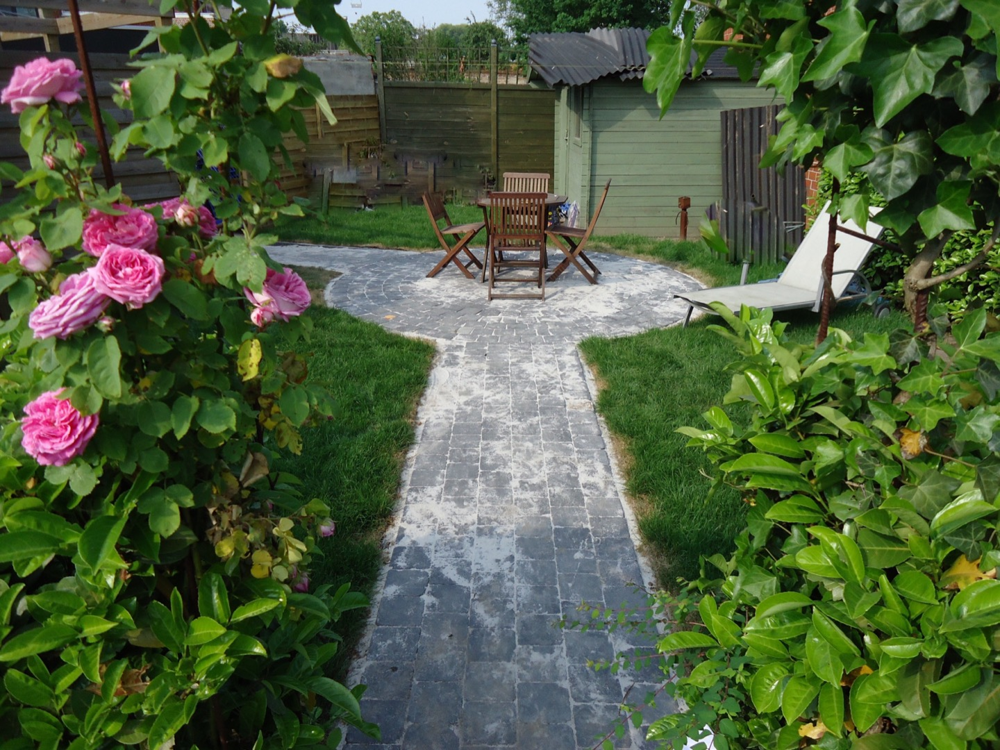
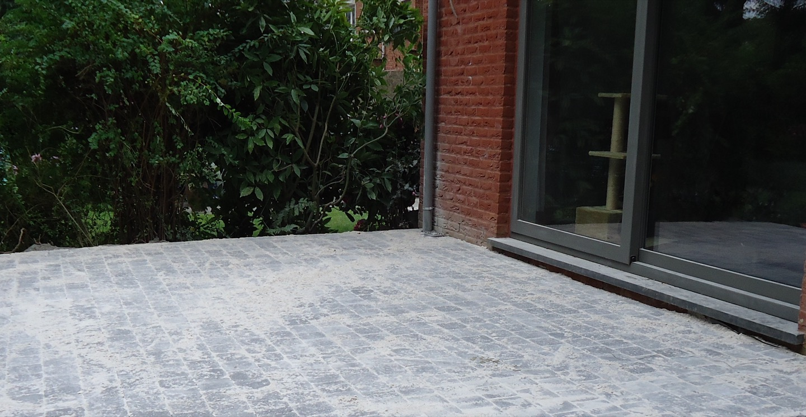
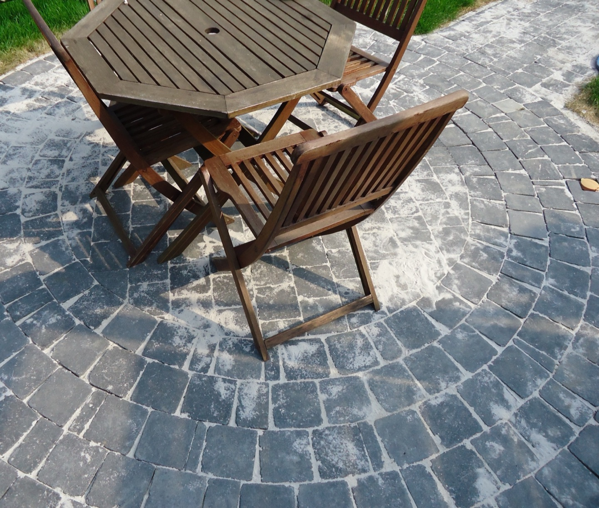
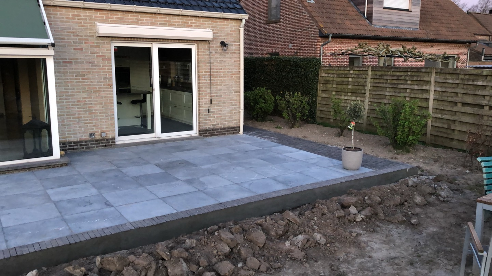
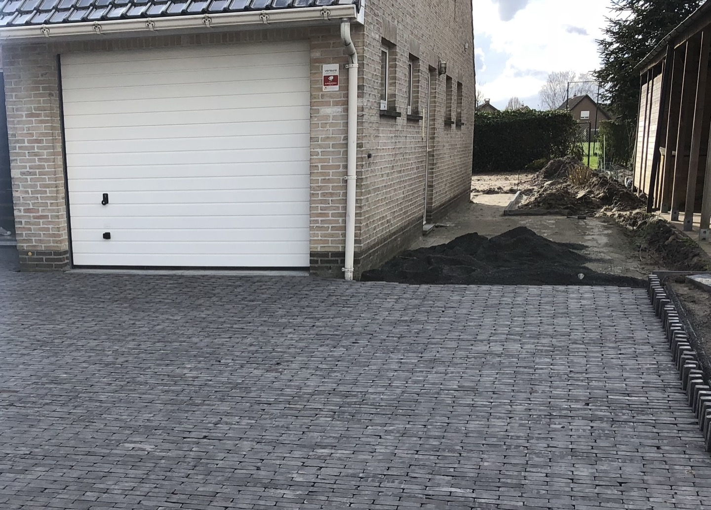
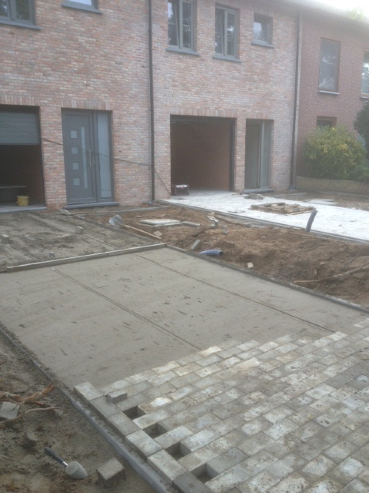

Uw oprit of terras.
Goed aangelegd.
Mooi afgewerkt.
Van de eerste grondwerken tot de laatste steen. Sepro Bestratingen maakt van uw plannen een buitenruimte die bij uw woning past.
- Van A tot Z uitgevoerd
- Persoonlijk contact
- Oog voor detail





Uw plannen, één aanspreekpunt.
Uitbreken & grondwerken
Plaatsing
Afwerking
Een oplossing voor
elke buitenruimte.
Een nieuwe oprit, een terras of een herstelling? Wij verzorgen de voorbereiding, plaatsing en afwerking.
Van een goede ondergrond
tot een strak geheel.
Vertel ons uw plannen Betonklinkers
Een sterke en veelzijdige keuze voor uw oprit. We zorgen voor een stabiele ondergrond en een verzorgde plaatsing.
Natuursteen
Geef uw terras karakter met natuursteen. Een natuurlijke uitstraling, met aandacht voor de plaatsing en de details.
Platines
De authentieke uitstraling van kasseien voor uw terras of verharding. Platines brengen karakter in uw buitenruimte.
Grind & stabilisatiematten
Een waterdoorlatende oplossing voor opritten en parkings. Stabilisatiematten helpen het grind op zijn plaats te houden.
Grondwerken & voorbereiding
Goed begonnen is goed gebouwd. We verzorgen het uitbreken, uitgraven en voorbereiden van de ondergrond voor de nieuwe bestrating.
Herstellingen
Een verzakking in uw oprit of een beschadigde tegel? Ook voor herstellingen aan bestaande bestrating kunt u bij Sepro terecht.
Vakwerk dat
u kunt zien.
Een selectie uit de galerij van Sepro. Bekijk de materialen, legpatronen en afwerking van dichtbij.
Meer zien? Blader door de projecten.

Een persoonlijke aanpak.
Tot de laatste steen.
Sepro Bestratingen verzorgt de aanleg van opritten en terrassen, van het uitbreken en de grondwerken tot de afwerking. Vanuit Wuustwezel werken we aan een resultaat dat aansluit bij uw woning en uw wensen.
Het volledige werk in eigen handenDe voorbereiding en plaatsing vormen één geheel.
Aandacht voor de afwerkingVan de aansluiting aan uw woning tot de laatste rand.
Persoonlijk en duidelijkUw plannen en vragen bespreken we rechtstreeks.
Uw project,
helder van bij de start.
Van een eerste idee naar een afgewerkte buitenruimte. We bekijken uw plannen, de materiaalkeuze en de uitvoering als één geheel.
- 01
Uw plannen bespreken
Vertel wat u wilt aanleggen of herstellen en waar het project zich bevindt.
- 02
De juiste aanpak bepalen
Materiaal, ondergrond en uitvoering worden afgestemd op uw wensen.
- 03
Van grondwerk tot afwerking
De voorbereiding, plaatsing en details komen samen in het eindresultaat.
Nog een vraag?
Kan ik ook een bestaande oprit laten herstellen?
Ja. Sepro voert ook herstellingen uit, bijvoorbeeld bij een verzakking of een beschadigde tegel. Beschrijf het probleem en bespreek de mogelijkheden.
Verzorgen jullie ook de grondwerken?
Ja. Het uitbreken, uitgraven en voorbereiden van de ondergrond maakt deel uit van het aanbod.
Welk materiaal past bij mijn project?
Dat hangt af van het gebruik en de gewenste uitstraling. Sepro plaatst betonklinkers, natuursteen, platines en grind met stabilisatiematten. Bespreek uw wensen voor advies op maat.
Waar is Sepro gevestigd?
Sepro is gevestigd aan de Berkendreef 32 in 2990 Wuustwezel. Neem contact op om te bespreken of uw project binnen het werkgebied valt.
Klaar voor een
mooie buitenruimte?
Een nieuwe oprit, een terras of een herstelling? Vertel ons uw plannen. We bekijken graag wat mogelijk is.
0497 83 22 01wouter@sepro-bestratingen.beSepro bvBerkendreef 32
2990 Wuustwezel
Dit is een onafhankelijk websitevoorstel door Bloxflow. Het formulier is een demonstratie; uw gegevens worden niet verzonden of opgeslagen.